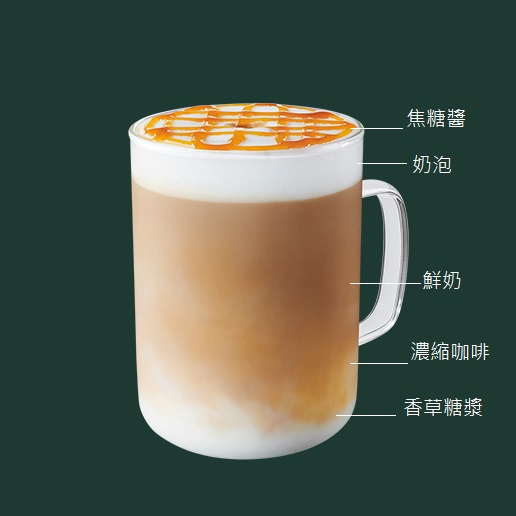

Caramel Macchiato 焦糖瑪奇朵
香濃牛奶裡加入香草糖漿，上層再淋上濃縮咖啡和純正焦糖醬製作而成，特點是在一杯飲品裡可以喝到三種不同的口味。
飲用時可以不先攪拌，首先品嘗覆蓋在上頭如同牛奶糖般甜甜的焦糖醬，再來是口味濃郁的濃縮咖啡，最後一層是混合香草糖漿香甜的牛奶。
飲用時可以不先攪拌，首先品嘗覆蓋在上頭如同牛奶糖般甜甜的焦糖醬，再來是口味濃郁的濃縮咖啡，最後一層是混合香草糖漿香甜的牛奶。